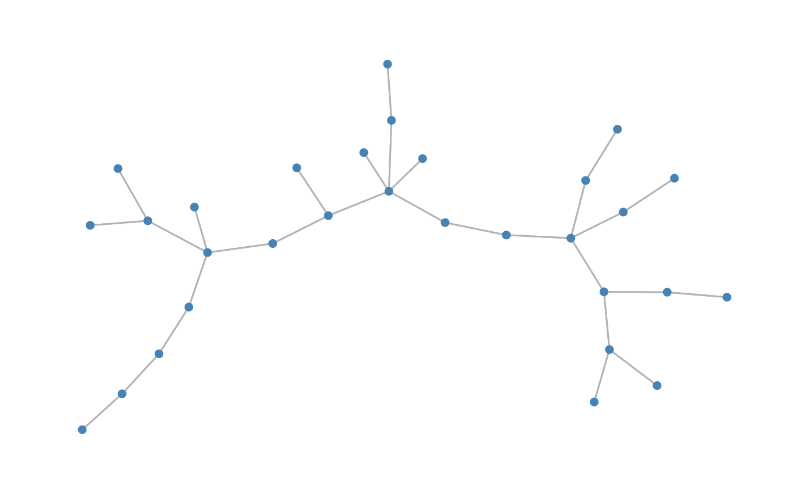

Simulates data under the PLN model with control on the dependency structure
Source:R/gener_data.R
data_from_scratch.RdSimulates data under the PLN model with control on the dependency structure
data_from_scratch( type, p = 20, n = 50, r = 5, covariates = NULL, dens = log(p)/p, k = 3, norm = FALSE, signed = FALSE, v = 0.01, draw = FALSE )
Arguments
| type | type of graph, either "tree", "erdos", "cluster" or "scale-free" |
|---|---|
| p | wanted number of columns (species) |
| n | wanted number of rows (samples/observations) |
| r | within/between connectivity ratio for cluster graphs |
| covariates | a data.frame or matrix containing data covariates. |
| dens | density of edges for cluster graphs or edge probability for Erdös graphs |
| k | number of groups for the cluster structure. |
| norm | should the Gaussian parameters be normalized ? |
| signed | boolean: should the graph be composed of positive and negative partial correlations ? |
| v | noise parameter of the precision matrix |
| draw | boolean, plots the graph if set to TRUE |
Value
a list containing
data: simulated counts
omega: the precision matrix
Examples
#> List of 2 #> $ data : int [1:50, 1:30] 4 1 0 0 87 0 0 2 21 21 ... #> $ omega: num [1:30, 1:30] 3.01 0 0 0 0 0 0 0 0 1 ... #> ..- attr(*, "dimnames")=List of 2 #> .. ..$ : NULL #> .. ..$ : NULLY2<-data_from_scratch("cluster",p=p,r=10, dens=10/p, k=3,draw=TRUE)